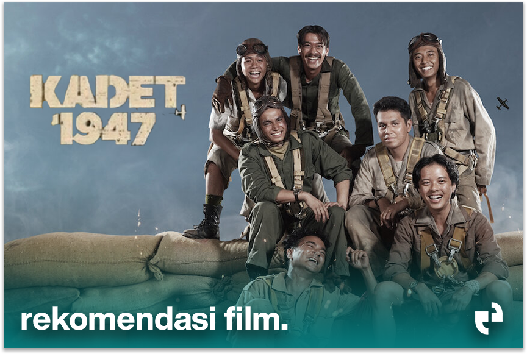

"KADET 1947" – Film Sejarah yang Menggetarkan Jiwa Nasionalisme
Berita filmDitulis oleh: Risqi Akbar | Tanggal: 16 April 2025 | ⏱️Waktu baca: 3 menit
Tentang Film
- Judul:KADET1947
- Rilis: 25 November 2021
- Genre: Drama, Sejarah, Perang
- Produksi: Temata Studios, Screenplay Films, Legacy Pictures
- Disutradarai oleh: Rahabi Mandra & Aldo Swastia
"KADET 1947" merupakan film drama sejarah Indonesia yang mengisahkan perjuangan para kadet muda Angkatan Udara dalam mempertahankan kemerdekaan Indonesia. Berlatar tahun 1947, film ini berfokus pada sekelompok pemuda yang tanpa pengalaman militer berani mengudara demi membela tanah air dari agresi Belanda.
Disutradarai oleh Rahabi Mandra dan Aldo Swastia, film ini menyuguhkan semangat perjuangan, pengorbanan, dan nasionalisme yang tinggi. Meski mereka hanyalah kadet, keberanian mereka layak dikenang dalam sejarah bangsa.
"Film ini adalah bentuk penghormatan terhadap pahlawan yang tak banyak diketahui. Kami ingin generasi muda tahu bahwa kemerdekaan tidak datang dengan mudah."
Film ini dibintangi oleh aktor muda berbakat seperti:
- Kevin Julio sebagai Soerjono
- Chicco Kurniawan sebagai Har
- Bisma Karisma sebagai Mulyono
- Wafda Saifan sebagai Adji
- Omara Esteghlal sebagai Dul
Dengan visual yang autentik dan riset sejarah yang mendalam, "KADET 1947" berhasil menggambarkan ketegangan dan semangat juang pada masa awal kemerdekaan Indonesia.
Film ini telah mendapatkan banyak pujian dari kritikus dan penonton karena menyuguhkan cerita sejarah yang jarang diangkat di layar lebar dengan kualitas sinematik yang kuat.